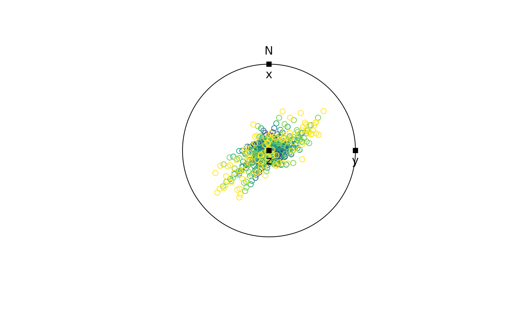

The velocity gradient tensor describes the velocity of particles at any instant during the deformation. Velocity gradient tensor from deformation gradient tensor.
Usage
is.velgrad(x)
as.velgrad(object)
velgrad(x, time, ...)
# Default S3 method
velgrad(x, ...)
# S3 method for class 'defgrad'
velgrad(x, time = 1, ...)Details
velgrad() calculates the velocity gradient tensor as the matrix logarithm of the
deformation gradient tensor divided by given time, and
the deformation gradient tensor accumulated after some time.
See also
defgrad(), stereo_path() for plotting
Examples
d <- defgrad_from_generalshear(k = 2.5, gamma = 0.9)
l <- velgrad(d, time = 10)
d_steps <- defgrad(l, time = 10, steps = 2)
# apply on orientation data
set.seed(20250411)
v <- rvmf(100, mu = Line(0, 90), k= 100)
v_trans <- lapply(d_steps, function(i){transform_linear(v, i)})
# plot in stereonet
axes <- Vec3(c(1, 0, 0), c(0, 1, 0), c(0, 0, 1))
stereo_path(v_trans, type = "l", add = FALSE)
stereo_path(v_trans, type = "p", col = assign_col(seq_along(v_trans)), pch = 16, cex = .4)
points(axes, pch = 15); text(axes, labels = c('x', 'y', 'z'), pos = 1)
